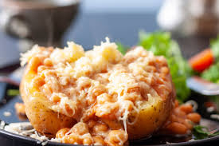
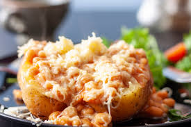

Odin Recipes
Jacket Potato with Beans and Cheese
 

Description
For those wondering what on earth is going on here, potentially those outside the UK, this dish is a British staple (and yes fellow Brits,
I am talking on behalf of all of us right now 🤣). It's exactly what it says on the tin - a jacket potato (baked potato) with baked beans and grated cheese on top.
Yes, it's better than it sounds 😂
Ingredients
Checklists:
- 2x large Baking Potatoes (approx 350g/12oz EACH)
- 1x 415g/14oz tin of Baked Beans
- 100g / 1 cup Cheddar, grated
- 2 tbsp Butter
- Worcestershire Sauce, as needed (optional)
- Olive Oil, as needed
- Salt, as needed
Instructions
- Preheat oven to 180C/350F.
- Place the potatoes on a baking tray and stab them a few times all over with a fork. Coat in a drizzle of olive oil and a good pinch of salt, then place in the oven for 1 hour 20 mins (should be fork tender all the way through at this point). Crank up the heat to 220C/430F until ultra crispy, then remove.
- Just before the end, add the beans to a pot over medium heat and simmer until they're piping hot and the sauce thickens up.
- Slice potatoes down the centre and push them open. Add 1 tbsp butter and a good pinch of salt to both. Fluff up with a fork to get the butter & salt in and around the potato.
- Top with a pinch of cheese, followed by beans, followed by more cheese then finished with a few dashes of Worcestershire sauce.
© All rights reserved by SYafie NS